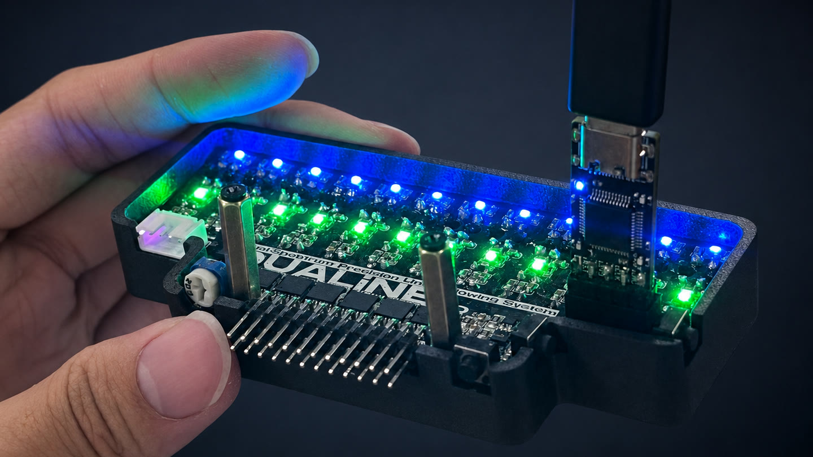

International research award
Best Paper Award
2026 IEEE 9th International Conference on Industrial Cyber-Physical Systems
Co-first author · Paper
Embedded systems · Energy-aware computing
I design complete systems across power electronics, custom PCBs, firmware, FPGA/Linux, computer vision, and on-device intelligence.
Computer Science undergraduate at ShanghaiTech University, undergraduate researcher at METAL Lab, and President of GeekPie Association.
PEAK power-management board, independently designed and assembled
International research award
2026 IEEE 9th International Conference on Industrial Cyber-Physical Systems
Co-first author · Paper
National CPU design competition
2026 National Student Computer System Capability Competition, CPU Design Track
Team captain · System details
Shanghai electronic design competition
2026 TI Cup Shanghai Undergraduate Electronic Design Competition
Team captain · System details
My strongest work spans the complete path from circuit behavior and measured signals to deployable embedded software.
A battery-free embedded sensing platform combining custom power hardware with on-device inference.
I independently developed the research prototype across schematic and PCB design, board assembly and bring-up, embedded firmware, TinyML deployment, BLE communication, and experiment tooling.
Team results are shown separately from the subsystem work I personally led.

National second prize
My responsibility: team captain; CPU performance and timing, FPGA system integration, and Linux bring-up.
Four-issue SpinalHDL CPU on Artix-7, closed at 100 MHz with a 4.831× speedup over the competition baseline, plus Linux 5.14, X11, USB HID, and networking.

Shanghai first prize
My responsibility: team captain; K230 vision system and mechanical integration.
Calibrated 88.9 FPS ball tracking with approximately 1 mm static error, connected to an STM32F407 controller over COBS and CRC-16 protected UART.
Independent boards and selected team software beyond the two competition systems above.

Designed the schematic, dense PCB layout, SMT assembly, enclosure, and MCU firmware. Cascaded-latch multiplexing provides 1 kHz quasi-synchronous infrared and visible-light sampling with ambient-light rejection.
Local multimodal livestream operations software combining Qwen, Whisper/VAD, OBS WebSocket, FastAPI/WebSocket, React, TTS, and digital-human backends.
I study systems in which power availability, hardware behavior, scheduling, and algorithms must be designed together.
Developed a two-dimensional energy supply-demand model and translated it into design rules for converter selection, control policy, and storage sizing.
Best Paper Award at the IEEE International Conference on Industrial Cyber-Physical Systems.
IEEE paper and DOICarnegie Mellon University · WWFProf. Fei Fang
Developing a grid-month patrol-priority system with spatial data audits, rolling backtests, machine-learning baselines, GeoJSON outputs, and equal-area evaluation from 200 m to 2 km.
Operational data, maps, and geographic details remain private during the collaboration.
Power-path design, analog signal conditioning, schematic and PCB layout, SMT assembly, board bring-up, and measurement.
Demonstrated in PEAK and DUALiNEC/C++, nRF52/nRF54, STM32, ESP32, K230, Zephyr, BLE, UART protocols, Wi-Fi, and MQTT.
Demonstrated in PEAK and TI CupScala/SpinalHDL, Verilog, LA32R, RISC-V, Vivado, timing closure, Linux, drivers, and Buildroot.
Demonstrated in MIKUTFLM, INT8 deployment, feature extraction, CanMV vision, dataset design, measurement, and evaluation.
Demonstrated in PEAK and TI CupSeptember 2025 to present
I lead ShanghaiTech's 66-member student technology association and direct its embedded systems and intelligent hardware program. My work includes technical direction, budgets, external collaboration, member development, laboratory procedures, and engineering events.
During the 2025-26 academic year, GeekPie reported more than 20 technical events and 780 event attendances across workshops, open-source infrastructure, project training, and engineering competitions.
Shanghai, China · lihz2024@shanghaitech.edu.cn